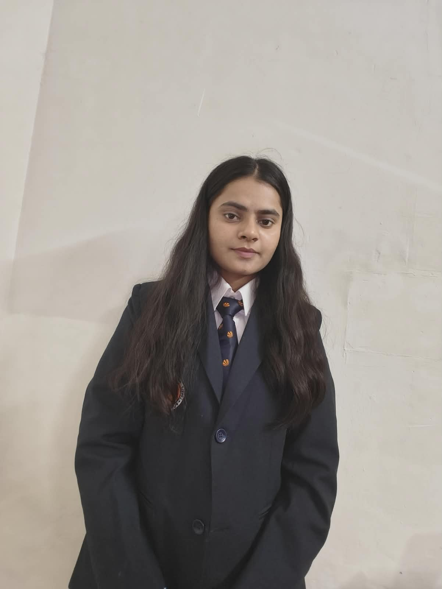

SIGNAL / 24
98.7 %system health
A calm monitoring dashboard for teams who need to see the whole picture.
software developer / 2026
I’m Roshni, a developer who turns ideas into resilient products, clear interfaces, and systems that quietly do their job well.

Interfaces that feel clear, responsive, and alive.
HTML / CSS / JSReliable application layers built to last.
PYTHON / C++Turning information into useful direction.
DBMS / POSTGRESselected work
01 / 04A small selection of work that sits at the intersection of useful systems, expressive interfaces, and a little bit of obsessive craft.
A calm monitoring dashboard for teams who need to see the whole picture.
Making open city data feel tangible, searchable, and human.
A portfolio system for a small creative practice with big ideas.
the human behind it
02 / 04I care about the space between raw functionality and a genuinely considered experience. My work starts with questions, moves through structure, and ends somewhere people can actually use.
When I'm away from the keyboard, I'm usually collecting fragments: a good sentence, an unusual color, a better way to explain something.
background & expertise
03 / 04developer profile
Building thoughtful digital systems with a focus on clear interfaces, resilient logic, and product usability.
Exploring systems design, database workflows, and modern web development with a strong emphasis on craft and clarity.
have a good problem?
04 / 04Have an idea, a product challenge, or a system that needs a thoughtful technical mind? Send it my way. I'd love to hear what you're working on.